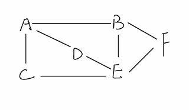

BFS is a graph traversal algorithm that explores all the neighbors of a node and then moves to the next level of the graph. It is often used to find the shortest path between two nodes in a graph.
The algorithm is similar to Depth First Search, but it uses a queue instead of a stack.
Example:
Here's an implementation of the BFS algorithm in JavaScript:
function bfs(graph, start) {
const visited = {};
const queue = [start];
while (queue.length) {
const node = queue.shift();
if (!visited[node]) {
visited[node] = true;
queue.push(...graph[node]);
}
}
return visited;
}
As you can see, the BFS algorithm is similar to the Depth First Search algorithm, but it uses a queue instead of a stack.